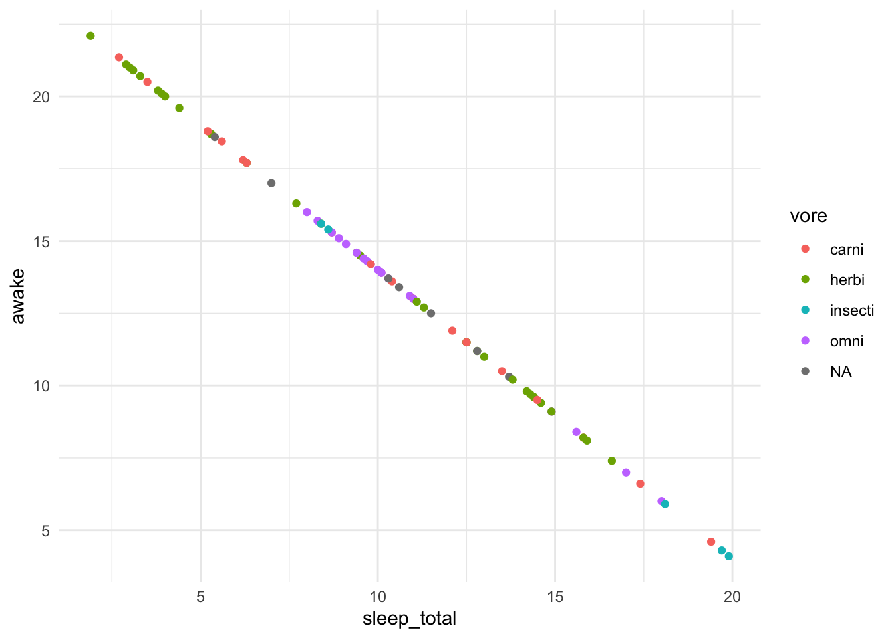

library(tidyverse)
library(gt)Cross Reference
1 Images

Reference: Figure 1. We can reformat how this appears. For instance 1 or Figgy 1.
2 Plots
qplot(sleep_total, awake, data = msleep, color = vore) +
theme_minimal()

Reference: Figure 2. We can reformat how this appears. For instance 2 or Figgy 2.
3 Tables
msleep |>
summarise(Count = n(),
avg_sleep = mean(sleep_total, na.rm = TRUE),
.by = vore) |>
arrange(desc(avg_sleep)) |>
gt()| vore | Count | avg_sleep |
|---|---|---|
| insecti | 5 | 14.940000 |
| omni | 20 | 10.925000 |
| carni | 19 | 10.378947 |
| NA | 7 | 10.185714 |
| herbi | 32 | 9.509375 |
Reference: Table 1. We can reformat how this appears. For instance 1 or Tabby 1.
4 Callouts
Note 1
Check out this note!
Reference: Note 1. We can reformat how this appears. For instance 1 or Note 1.
5 Equations
\[ e = mc^2 \tag{1}\]
Reference: Equation 1. We can reformat how this appears. For instance 1 or Eq. 1.
6 Sections
Please refer to Section 1.